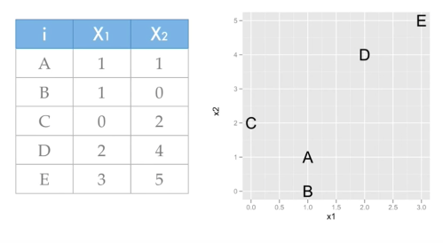
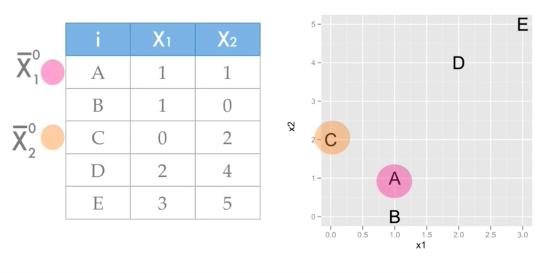
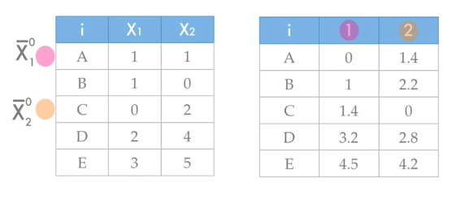
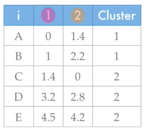
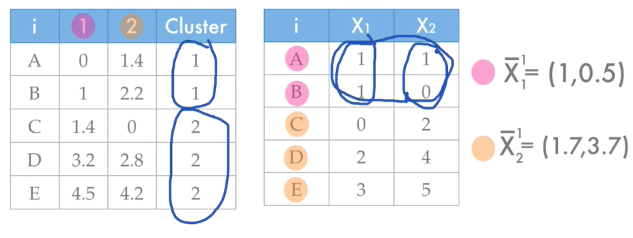
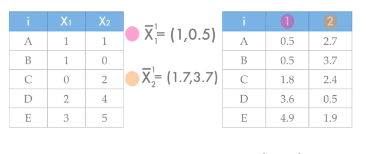
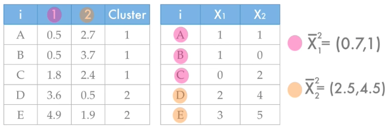
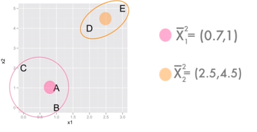

Algoritma K-Means Clustering¶
Langkah-langkah algortima K-Means Clustering :¶
- Tentukan jumlah cluster(kelompok) yang kita inginkan.
- Inisiasi centroid untuk setiap cluster secara acak. Centroid adalah data yang merepresentasikan suatu kelompok.
- Hitung kedekatan suatu data terhadap centroid, kemudian masukkan data tersebut ke cluster yang centroid-nya memiliki sifat terdekat dengan dirinya(yang nilainya paling kecil).
- Pilih kembali centroid untuk masing-masing cluster ,yaitu mean (rata-rata) nilai data dari setiap cluster yang sama .
- Ulangi langkah ke-3 sampai tidak ada perubahan anggota untuk semua cluster, atau sampai batas yang ditentukan dari perulangan anggota yang sama.
Contoh Perhitungan K-Means Sederhana¶

Perhatikan gambar diatas, ada tabel yang mempunyai column X1 dan X2, dimana tabel tersebut akan kita pakai untuk mempelajari k-means clustering. Pertama-tama kita akan menentukan jumlah cluster (kelompok) yakni kita tentukan k = 2. tahap selanjutnya adalah inisiasi centroid karena k = 2 , maka kita akan memilih 2 observasi secara acak dari tabel, yakni A dan C.

setelah itu kita akan menghitung jarak antar data dengan centroid yang telah ditentukan, dengan menggunakan formula euclidean distance.
Maka pertama-tama kita akan menghitung observasi A dengan centroid 1 :
=√(1-1)^2 + (1-1)^2
=√(0)^2 + (0)^2
=√0
=0
Setelah itu menghitung observasi A dengan centroid 2:
=√(1-0)^2 + (1-2)^2
=√(1)^2 + (1)^2
=√2
=1,4

Lakukan perhitungan sampai semua observasi dihitung.

Hitung kedekatan suatu data terhadap centroid, kemudian masukkan data tersebut ke cluster yang centroid-nya memiliki sifat terdekat dengan dirinya (yang nilainya paling kecil). Pada observasi A yang paling kecil nilainya adalah 0 maka masuk ke dalam cluster 1.

Pilih kembali centroid untuk masing-masing cluster ,yaitu mean (rata-rata) nilai data dari setiap cluster yang sama . observasi A dan B dalam cluster yang sama yakni cluster 1, maka dihitung untuk centroid 1 = (1+1 / 2 , 1+ 0 /2 ) -> (1,0.5). dan centroid 2 = (1.7,3.7).

Lakukan penghitungan lagi dengan centroid yang baru.

Pilih kembali centroid untuk masing-masing cluster ,yaitu mean (rata-rata) nilai data dari setiap cluster yang sama. Ulangi sampai tidak ada perubahan anggota untuk semua cluster, atau sampai batas yang ditentukan dari perulangan anggota yang sama.
